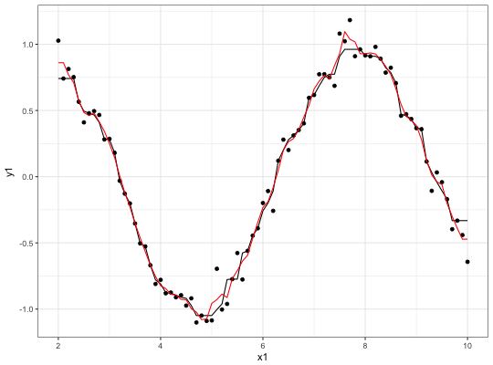

Moving Window Functions
step_window creates a specification of a recipe step that will
create new columns that are the results of functions that compute
statistics across moving windows.
step_window(recipe, ..., role = NA, trained = FALSE, size = 3, na.rm = TRUE, statistic = "mean", names = NULL)
Arguments
| recipe | A recipe object. The step will be added to the sequence of operations for this recipe. |
|---|---|
| ... | One or more selector functions to choose which variables are
affected by the step. See |
| role | For model terms created by this step, what analysis role should
they be assigned? If |
| trained | A logical to indicate if the quantities for preprocessing have been estimated. |
| size | An odd integer |
| na.rm | A logical for whether missing values should be removed from the calculations within each window. |
| statistic | A character string for the type of statistic that should
be calculated for each moving window. Possible values are: |
| names | An optional character string that is the same length of the
number of terms selected by |
Value
step_window returns an object of class step_window.
Details
The calculations use a somewhat atypical method for handling the
beginning and end parts of the rolling statistics. The process starts
with the center justified window calculations and the beginning and
ending parts of the rolling values are determined using the first and
last rolling values, respectively. For example if a column x with
12 values is smoothed with a 5-point moving median, the first three
smoothed values are estimated by median(x[1:5]) and the fourth
uses median(x[2:6]).
Examples
library(recipes) library(dplyr) library(rlang) library(ggplot2, quietly = TRUE) set.seed(5522) sim_dat <- data.frame(x1 = (20:100) / 10) n <- nrow(sim_dat) sim_dat$y1 <- sin(sim_dat$x1) + rnorm(n, sd = 0.1) sim_dat$y2 <- cos(sim_dat$x1) + rnorm(n, sd = 0.1) sim_dat$x2 <- runif(n) sim_dat$x3 <- rnorm(n) rec <- recipe(y1 + y2 ~ x1 + x2 + x3, data = sim_dat) %>% step_window(starts_with("y"), size = 7, statistic = "median", names = paste0("med_7pt_", 1:2), role = "outcome") %>% step_window(starts_with("y"), names = paste0("mean_3pt_", 1:2), role = "outcome") rec <- prepare(rec, training = sim_dat)#> step 1 window training #> step 2 window training# If you aren't sure how to set the names, see which variables are selected # and the order that they are selected: terms_select(info = summary(rec), terms = quos(starts_with("y")))#> [1] "y1" "y2"smoothed_dat <- bake(rec, sim_dat, everything()) ggplot(data = sim_dat, aes(x = x1, y = y1)) + geom_point() + geom_line(data = smoothed_dat, aes(y = med_7pt_1)) + geom_line(data = smoothed_dat, aes(y = mean_3pt_1), col = "red") + theme_bw()# If you want to replace the selected variables with the rolling statistic # don't set `names` sim_dat$original <- sim_dat$y1 rec <- recipe(y1 + y2 + original ~ x1 + x2 + x3, data = sim_dat) %>% step_window(starts_with("y")) rec <- prepare(rec, training = sim_dat)#> step 1 window trainingsmoothed_dat <- bake(rec, sim_dat, everything()) ggplot(smoothed_dat, aes(x = original, y = y1)) + geom_point() + theme_bw()